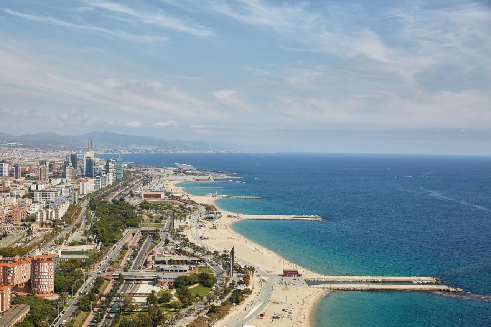
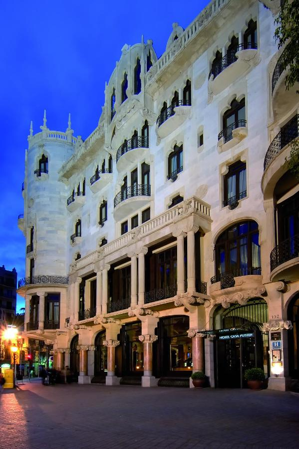
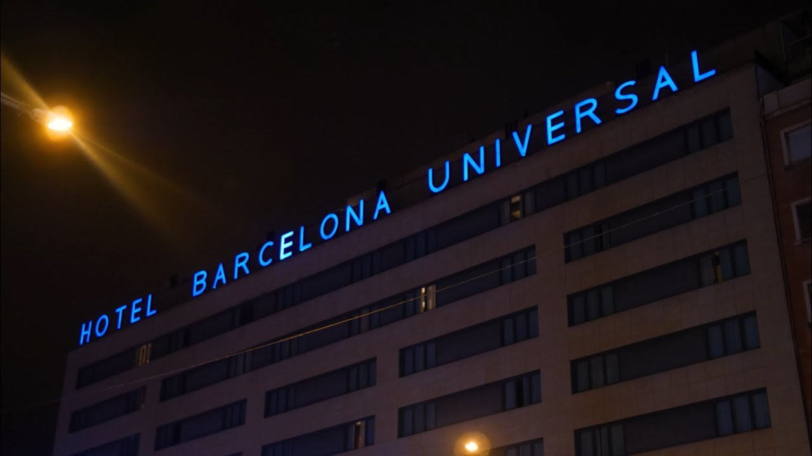

|
 |
|  | Hotel Casa
Fuster G.L Monumento:
This luxurious 5-star hotel is located at the head of Barcelona’s chic
Passeig de Gracia Avenue. It features a sauna, gym, rooftop pool with
excellent views, and stylish restaurant serving Mediterranean cuisine Contact:-+34 932 55 30 00 |
| Hotel Barcelona
Universal: This 4-star hotel is located next to Parallel Metro Station.
It offers free Wi-Fi, a gym, and a rooftop pool with city views Contact:-+34 935 67 74 47 |
 |